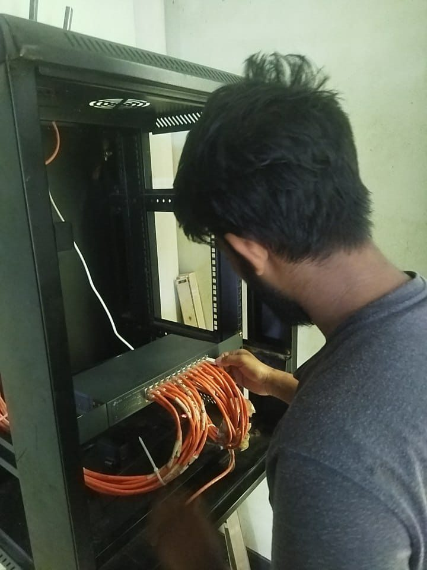

Complete Computer Lab Setup & Deployment
Gausul Azam Maizbhandari Polytechnic Institute
The Challenge
The polytechnic's computer labs needed a complete overhaul. Outdated workstations, unreliable network connectivity, and frequent hardware failures were causing regular session delays for students. There was no standardized imaging, no preventive maintenance schedule, and the LAN infrastructure was unstable — affecting daily practical classes across all three labs.
Lab Setup Details
Click each tab to explore the setup process for that specific lab.
Software Lab
Configured 20 workstations for software development and programming classes. Each station was imaged with development tools, compilers, and IDEs to support curriculum from Python basics to web development.
Hardware Assembly
Assembled all 20 workstations from components — motherboard, processor, RAM, storage, and PSU installation — followed by monitor, keyboard, and mouse setup on each desk.
OS Setup
Installed Windows 11 and Ubuntu Linux dual-boot on all 20 workstations using disk imaging tools. Standardized driver packages for consistent hardware compatibility.
LAN & Network Configuration
Installed LAN outlets wired to the 24-port switch, with each PC connected to its LAN outlet using CAT6 cable. Configured DHCP and assigned every workstation to subnet 192.168.10.0/24 with internet access for research.
Configure Environment
Installed the required software — VS Code, Python 3.x, Java JDK, Node.js, and web browsers. Configured environment variables and PATH settings for each user profile.
Student Access
Created user accounts for different batches, set up shared folders for class submissions, and configured permissions for each student profile.
Maintenance
Established a monthly maintenance schedule — dust cleaning, software updates, driver updates, and disk cleanup to keep all workstations running smoothly.
Software Lab Architecture
Software Installed
Office Application Lab
Deployed 20 workstations dedicated to office productivity training. Each station configured with the full Microsoft Office suite and internet access for online coursework.
Hardware Assembly
Assembled all 20 workstations from components — motherboard, processor, RAM, storage, and PSU installation — followed by monitor, keyboard, and mouse setup on each desk.
OS Setup
Installed Windows 11 with Microsoft Office 2019/365 on all 20 workstations using disk imaging tools. Activated licenses, configured user profiles, and verified all applications function correctly.
LAN & Network Configuration
Installed LAN outlets wired to the 24-port switch, with each PC connected to its LAN outlet using CAT6 cable. Configured DHCP and assigned every workstation to subnet 192.168.20.0/24 with internet access for online coursework.
Configure Environment
Connected shared printers via network, configured print queues, and set up scanner access. Installed printer drivers on each workstation for seamless printing during classes.
Student Access
Created user accounts for different batches, set up shared folders for class submissions, and configured permissions for each student profile.
Maintenance
Established a monthly maintenance schedule — dust cleaning, software updates, driver updates, and disk cleanup to keep all workstations running smoothly.
Office Lab Architecture
Software Installed
IT & Hardware Lab
Built and deployed 10 workstations from scratch — assembled components, installed OS, configured networking, and set up hardware diagnostics tools. This lab serves as the hands-on training ground for IT infrastructure courses.
Hardware Assembly
Assembled 10 PCs from components — motherboards, CPUs, RAM, storage, and PSUs. Bench-tested each unit before installation. Mixed brands: HP, Dell, custom builds with Starex and Esonic monitors.
OS Setup
Installed Windows 11 on all 10 workstations using disk imaging tools. Configured BIOS/UEFI settings for hardware training access and installed standardized driver packages.
LAN & Network Configuration
Installed LAN outlets wired to the 24-port switch, with each PC connected to its LAN outlet using CAT6 cable. Under-desk cable routing, RJ-45 Cat6 crimping, and patch panel wiring. Subnet 192.168.30.0/24.
Configure Environment
Installed VMware Workstation for virtualization training, hardware diagnostics utilities, and disk imaging tools for rapid deployment and recovery.
Student Access
Created user accounts for different batches, pre-loaded course materials, and set up screen sharing for instructor demonstrations.
Maintenance
Established a monthly maintenance schedule — dust cleaning, software updates, driver updates, and disk cleanup to keep all workstations running smoothly.
Software & Tools
My Approach — Across All Labs
Managed the end-to-end deployment across all three labs — from hardware assembly to network setup to software configuration — ensuring every workstation was ready for daily use with zero downtime during practical sessions.
Full Hardware Assembly
Built 50+ PCs from components — motherboards, RAM, storage, PSUs — bench-tested before deployment across all 3 labs.
Cat6 LAN Cabling
Complete RJ-45 crimping, patch panel wiring, switch configuration, and IP allocation across 3 separate subnets.
25% Downtime Reduction
Standardized imaging and preventive maintenance eliminated recurring hardware failures across all labs.
Zero Session Delays
Every workstation validated before class — no more student waiting during practical sessions.
Full Lab Infrastructure
Full Lab Infrastructure
Results
All three labs now run a combined 50+ workstations with zero session delays for daily practical classes. Downtime reduced by 25% through standardized imaging and preventive maintenance. Each lab has its own subnet for organized network management, and the maintenance schedule ensures long-term reliability across all labs.
Lab Photo Gallery
Photos from the actual labs — click any image to enlarge.
Software Lab
Assembly in progress
Software Lab
Monitor unboxing
Software Lab
Workstation layout
Software Lab
Windows desktops live
Software Lab
Peripheral & network setup
Software Lab
Side view — Row A
Software Lab
Wide angle view
Software Lab
Completed rows
Software Lab
Final inspection
Software Lab
PC assembly in progress
Software Lab
Motherboard & components
Software Lab
Workstation assembly
Software Lab
Completed PC ready
Office Lab
Positioning & setup
Office Lab
Cable management
Office Lab
Monitor & keyboard layout
Office Lab
Power & UPS routing
Office Lab
Training station ready